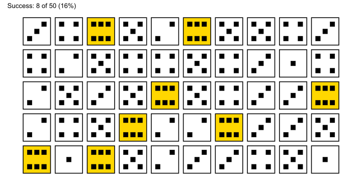

Statistical Distributions
Why distributions?

Figure 1: The model is perfect, but the real world is not.
Types of data
Nominal Data

Figure 3: Some example for nominal data.
Ordinal Data

Figure 4: Some example for ordinal data.
Discrete Data

Figure 5: Some example for discrete data.
Continous Data

Figure 6: Some example for continous data.
Dice


Visual comparison of discrete and continuous

Figure 9: A comparison of continnuous and discrete uniformly distributed data.
Classroom example
If we roll a fair six-sided die 10 times, how many times do you expect to get a specific outcome?
- 10 trials
- \(P?\) to roll a \(6\) (expected value)?
- record the number of times a specific outcome occurs
- repeat for 2-4 students


Theory
probability distribution for discrete outcomes
n repeated trials.
two possible outcomes (e.g., success or failure).
probability of success remains the same
each trial is independent

The PMF for the binomial distribution is
\[\begin{align} P(X = k) = \binom{n}{k} p^k (1 - p)^{n - k} \nonumber \end{align}\]
- \(X\) random variable
- \(k\) specific value of the random variable (\(X\)), represents the number of successes
- \(n\) total number of independent trials or experiments
- \(p\) probability of success in a single trial \(0<p<1\)
- \((1 - p)\) probability of failure in a single trial
- \(\binom{n}{k}\) binomial coefficient (“n choose k”)\(\rightarrow \binom{n}{k} = \frac{n!}{k! \cdot (n - k)!}\)
The Normal Distribution

Figure 14: The standarized normal distribution
Emergence


Approximation with a smooth curve
- For large \(n\), the binomial distribution looks like a bell curve. It can be approximated using the Stirling approximation

Figure 16: The normal distribution can be approximated using a continous curve
The Buffon needle problem
\(P\) for crossing a line?

Figure 18: An Illustration of the Buffon Needle Problem.
Sample Size

Figure 19: Counting needles leads to an esimtate of \(\pi\).
Z - Standardization

\[\begin{align} z = \frac{x_i - \mu}{\sigma} \nonumber \\ z = \frac{x_i - \bar{x}}{sd} \nonumber \end{align}\]
Machine (A) value: \(53\)
\[\begin{align} \bar{x} &= 50.03 \nonumber \\ sd_{x} &= 1.98 \nonumber \\ z\text{-score} &= \frac{x-\bar{x}}{sd_x} = \frac{53-50.03}{1.98} = 1.5 \nonumber \end{align}\]
Comparison of standardized data

Figure 21: Normalized data is easier to compare
The drive shaft exercise - Z-Standardization

Figure 22: The standardized data of the drive shaft data.
The drive shaft exercise - Normal Distribution

Figure 23: The drive shaft data with the respective normal distributions.
- there is no PDF for discrete variables
- can be interpreted as the relative likelihood
- is used to specify the probability of a random variable within a certain range
\[\begin{align} \varphi(x) = \frac{1}{\sigma\sqrt{2\pi}}e^{-\frac{1}{2}(\frac{x-\mu}{\sigma})^2} \end{align}\]

Cumulative Density Function (CDF)
- shows the actual probability for a certain value
- is the integral of the PDF
- area always sums up to \(1\)
\[\begin{align} z &= \frac{x-\mu}{\sigma} \nonumber \\ \varphi(x) &= \frac{1}{2\pi}e^{\frac{-z^2}{2}} \nonumber \\ \phi(x)& = \int \frac{1}{2\pi}e^{\frac{-x^2}{2}} \, dx \nonumber \\ \lim_{x\to + \infty} \phi(x) &= 1 \nonumber \\ \lim_{x\to - \infty} \phi(x) &= 0 \nonumber \end{align}\]

Likelihood and Probability
- Likelihood
- refers to the chance based on given evidence or assumptions, often used in statistical inference
- Probability:
- is a measure of the chance an event will occur, ranging from \(0\) to \(1\).


Chi2 - Distribution
- is a “new” distribution function
- arises from squaring a random variable
- is calculated with:
\[\begin{align} \chi^2 = \sum_{k = 1}^n \frac{(O_k - E_k)^2}{E_k} \end{align}\]

- handles categorical (nominal) data and is used in statistical inference in many ways
- the goal is to “convert” discrete (nominal) values to continous variables (counts in frequencies, making things measureable)
- Independence Test: Are two categorical variables independent of each other?
- Distribution Test: Are the observed values of two categorical variables equal to the expected values?
- Homogeneity Test:Are two or more samples from the same population (comparing frequencies)?

The drive shaft exercise - Chi2 Distribution

Figure 26: The \(\chi^2\) disitribution of the drive shaft data.
t - Distribution
- is another “new” distribution function
- is a generalization of the standard normal distribution
- “connects” the sample with the population via the t-score
- does not need the population standard deviation for computation
\[\begin{align} t_i = \frac{\bar{x} - \mu_0}{sd/\sqrt{n}} \label{tscore} \end{align}\]

Applications of the t-disitribution include:
Hypothesis testing (one sample t-test, two sample t-test, two sample t-test for paired samples)
Computing confidence intervals
Test significance of model parameters (against null model)
The drive shaft exercise - t-Distribution

Figure 28: The drive shaft data with normal disitribution, t-distribution and confidence intervalls using the t-distribution
F - Statistics
\[\begin{align} F_{m,n} = \frac{\chi^2_m/m}{\chi^2_n/n} \nonumber \end{align}\]


Weibull - Distribution
- Time-to-event (time to failure (TTF)) continuous distribution function
- Examples: time users spend on web pages, time until a product fails

\[\begin{align} f_X(x; \lambda, \beta) = \left\{ \begin{array}{cl} \frac{\beta}{\lambda}(\frac{x}{\beta})^{\beta-1} e^{-(x/\lambda)^\beta} & \ ; \ x \geq 0 \\ 0 & \ ; \ x < 0 \end{array} \right. \end{align}\]
- \(\lambda\) scale parameter
- \(\beta\) shape parameter
- Interpretation of Shape Parameter (\(\beta\)):
- \(\beta < 1\) Failure rate decreases over time (e.g., due to “infant mortality”).
- \(\beta = 1\) Constant failure rate (random external events causing mortality).
- \(\beta > 1\) Failure rate increases with time (aging process).

The drive shaft exercise - Weibull distribution

Figure 32: The measured hours how long the drive shafts lasted in the test stand.